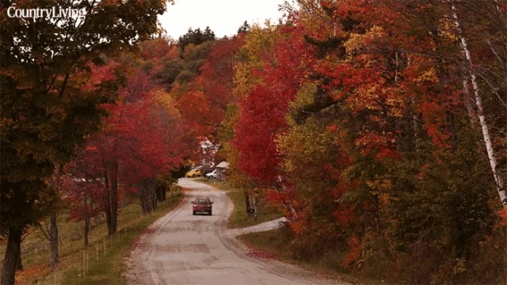
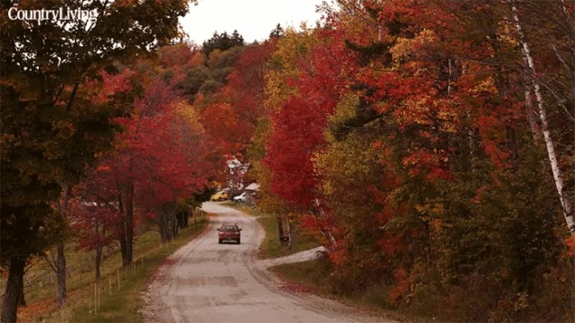

Hawaii

Geographical Location: North America
Welcome to Hawaii, the Aloha state. Hawaii is comprised of a chain
of 132 islands. We usually think of the eight main islands when we
think of Hawaii. This is not surprising as the other 124 islands
only total about 3 square miles in land area.
Hawaii is home of the world's most active volcano, the crater of
Kilauea on Mauna Loa. Sandy beaches, towering volcanoes, and lush
valleys lure thousands of tourists each year to this tropical
paradise.
Photo Gallery


Shanghai

Geographical Location: Asia
Shanghai, often referred to as the "Pearl of the Orient," is a
dynamic and vibrant metropolis in China. As one of the world's
largest cities, Shanghai is a dazzling blend of tradition and
modernity. With its iconic skyline featuring towering skyscrapers
like the Shanghai Tower and the Oriental Pearl Tower, it's no wonder
that Shanghai is often considered the financial and economic hub of
Asia. Beyond its impressive architecture, the city boasts a rich
cultural heritage, reflected in its historic neighborhoods such as
the Bund and the French Concession. Here, you can stroll along
tree-lined streets, explore colonial-era buildings, and savor a mix
of international cuisines. Shanghai is also a global center for
fashion, art, and entertainment, with a thriving arts scene,
world-class museums, and a bustling nightlife. Visitors to Shanghai
are sure to be captivated by its energy, diversity, and the seamless
fusion of old and new.
Shanghai is not just a city of skyscrapers; it's a city of
contrasts. The serene Yu Garden and its classical Chinese
architecture offer a peaceful escape from the bustling streets,
while the ultra-modern shopping districts like Nanjing Road cater to
the desires of avid shoppers. The city's food scene is a culinary
adventure in itself, with a vast array of local and international
dishes available from street vendors to Michelin-starred
restaurants. Additionally, Shanghai is a gateway to Chinese culture
and history, as it hosts numerous festivals, art exhibitions, and
performances that showcase China's heritage. Whether you're
wandering through ancient temples, exploring the thriving
contemporary art scene, or enjoying a traditional tea ceremony,
Shanghai promises a multifaceted experience that captures the
essence of China's past, present, and future.
Photo Gallery


Vermont
 

Geographical Location: North America
Vermont, located in the northeastern United States, is a state
renowned for its natural beauty and charm. It is known for its
breathtaking mountain ranges, serene lakes, dense forests, and
captivating rural landscapes. The Green Mountain National Forest
covers much of the state, offering abundant outdoor activities and
adventure opportunities. In winter, skiers flock here to enjoy
snow-covered slopes, while summer beckons hikers, cyclists, and
campers to explore its pristine wilderness. Furthermore, Vermont
boasts picturesque small towns with a countryside vibe and a unique
farming landscape, making it a destination where rural charm
thrives. Whether you're seeking the beauty of nature or embracing a
tranquil way of life, Vermont is a place worth visiting.
Vermont is celebrated not only for its natural beauty but also for
its distinctive culture and historical heritage. The state, as the
14th to join the United States, is considered one of the birthplaces
of the American Revolution, and as a result, it is rich in
historical landmarks and monuments. Additionally, Vermont takes
pride in its emphasis on environmentalism and sustainable living,
with communities often encouraging organic farming, farmers'
markets, and craftsmanship. Furthermore, the state is well-known for
its vibrant arts and music culture, offering a plethora of cultural
experiences with various music festivals, art galleries, and
performing arts venues. In essence, Vermont is a place where the
blend of natural splendor, historical legacy, and cultural vibrancy
attracts people of diverse interests and backgrounds to explore its
wonders. For details, check
39 Best Things to do in Vermont: The Ultimate VT Bucket List -
Global Viewpoint.
Photo Gallery